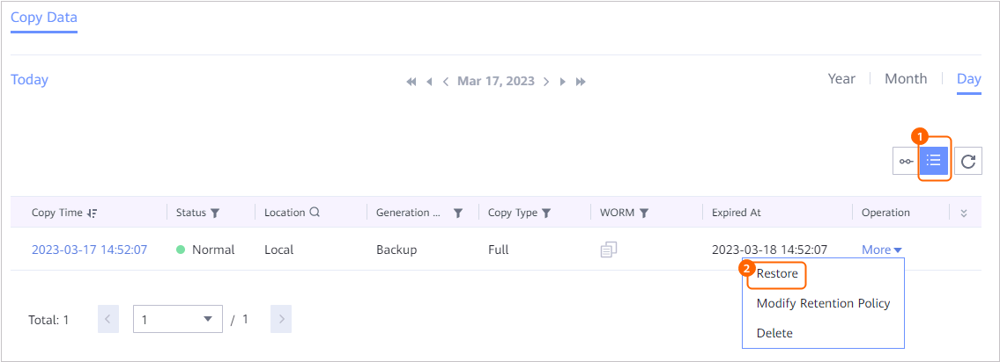

This section describes how to restore a database that has been backed up to the original location or a new location.
Prerequisites
- When data is restored to the original or new location, ensure that the remaining space of the target location is greater than the size of the restoration copy before reduction. Otherwise, the restoration will fail.
- Before the restoration, you need to ensure that the source database version matches the target database version. Otherwise, the restoration will fail.
- During the restoration, the topology structure and database name of the cluster must be the same as those during the backup, including the management node, data node, and data distribution information.
- Before the restoration, you need to ensure that the GBase 8a database is running properly and the network connection of each node in the cluster is normal.
- During the restoration, the passwords of the OS and database users cannot be changed.
Procedure
- Choose Explore > Copy Data > Databases > General Databases.
- Search for copies by database or copy. This section describes how to search for copies by database.
On the Resources tab page, locate the database to be restored by database name and then click the name.
- Click Copy Data and select the year, month, and day in sequence to locate the copy.
If
 is displayed below a month or day, copies exist in the month or on the day.
is displayed below a month or day, copies exist in the month or on the day. - Restore data using a specific copy.
- Specify a copy for restoration.

- Restore a GBase 8a database to the original location or a new location.
- Restore the GBase 8a database to the original location.
- Select Original location for restoration.
- Click GBase 8a.
- Restore the GBase 8a database to a new location.
- Select New location for restoration.
- Set the basic and advanced parameters of the restoration job.
Table 1 describes the related parameters.
Table 1 Parameters of a restoration job Parameter
Description
Hosts
Restore data to a single host in the target cluster.
Target Database
Target database to which data is restored.
NOTE:- Data in the target database will be overwritten during restoration.
Customized Parameters
Set parameters in some database scenarios.
- Click OK.
- Restore the GBase 8a database to the original location.
- Specify a copy for restoration.
- Click OK.